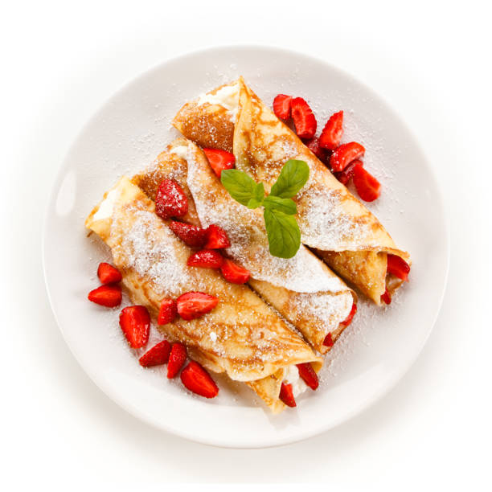

Bahan:
- 290 gram tepung terigu protein sedang
- 60 gram gula pasir
- 4 sdt baking powder
- ¼ sdt soda kue
- ½ sdt garam
- 440 ml susu cair
- 60 gram butter (mentega)
- 2 sdt ekstrak vanili
- 1 butir telur
Cara Membuat:
- Masukan tepung, gula, baking powder, soda kue, dan garam dalam mangkuk besar. Kemudian gunakan jari atau sendok untuk membuat lubang di tengah yang berukuran cukup besar.
- Aduk rata susu, mentega cair yang tidak panas, vanili, dan telur dalam mangkung lain. Baca juga: Resep Banana Pancake, Cocok untuk Sarapan
- Masukkan campuran susu tadi ke tepung, lalu campurkan bahan tadi dengan teknik aduk lipat. Aduk merata, mungkin ada beberapa gumpalan tetapi tak apa-apa itu wajar.
- Adonan akan memiliki tekstur kental tetapi tidak sekental krim. Jika adonan terlalu kental tambahkan beberapa sendok makan susu sampai adonan memiliki kekentalan yang diinginkan.
- Adonan disisihkan lalu panaskan wajan atau teflon anti lengket dengan api kecil-sedang. Olesi wajan dengan sedikit mentega. Jika terlalu banyak mentega pakai tisu makanan untuk mengurangi agar teflon jangan terlalu berminyak. Baca juga: Resep Sandwich Telur ala Jepang, Menu Sarapan Simple 2 Bahan
- Tuang sekitar empar sendok makan adonan ke wajan dan ratakan dengan bagian bawah sendok secara perlahan menjadi bentuk bulat.
- Saat gelembung mulai muncul di permukaan, balik dengan spatula dengan perlahan agar pancake tidak miring. Masak kedua sisi sampai bagian bawah berwarna keemasan. Resep ini bisa membuat sampai 12 pancake.
- Sajikan pancake yang masih hangat dengan topping sesuai selera
|